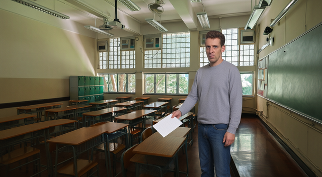

qwen-image-2.1
all at once (2 inputs)
10 credits
all at once (2 inputs)
10 credits


qwen-image-2.1
10 cr
10 cr

room partly · Teacher yes/yes · staging partly · one photo yes
Room landmarks retained, but framing and desk layout shift. Teacher’s face and brown wavy hair match. Blank single sheet, empty nearest desk, window sunlight; no seated student. No duplicates or floating people.
Room landmarks retained, but framing and desk layout shift. Teacher’s face and brown wavy hair match. Blank single sheet, empty nearest desk, window sunlight; no seated student. No duplicates or floating people.
prompt
Create ONE photorealistic widescreen 16:9 still, the first frame of a classroom scene. Reference image 1 is the CLASSROOM, the actual room, not inspiration: preserve its rows of brown wooden desks with dark metal frames, large grid windows along the back wall with trees outside, green chalkboard on the right wall, green lockers at left, ceiling fluorescents and fans, polished dark floor and the original perspective. Reference image 2 is the TEACHER: preserve his precise face, short curly brown hair, mature features, grey long-sleeve shirt and jeans. Add the people into the room naturally, at a size where faces are clearly visible; the room's light, perspective and floor stay as photographed. The teacher stands in the aisle beside a front-row desk holding a single white test sheet face down, blank side to camera, as if about to hand it to a seated student; the desk nearest him is empty. Morning sunlight through these windows. Each person must be recognisably the person in their reference, in colour, no props from the reference photos, no text, no watermark, no collage or split frame; one coherent photograph.